| TSME-ICOME 2023 Best Paper Runner-Up Award (DRC) |
AIP Conference Proceedings: Proceedings of the 13th TSME-ICoME 2023,Vol. 3236, Issue 1, No. 070001, (2024)
Takashi Tanaka, Hiroki Nakao, Yasunori Oura
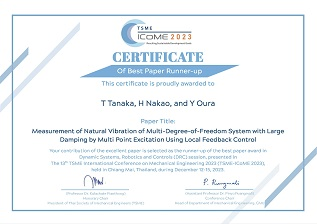
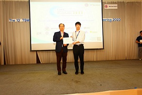
（写真はTSME-ICoME2023公式サイトより(右が発表者の中尾さん)）
| TSME-ICOME 2019 Best Paper Runner-Up Award (BME) |
Journal of Physics : Conference Series Vol.886, No. 012045, (2019)
Zhiqiang Wu, Takashi Tanaka, Kazuki Kamitani, Yasunori Oura, Hidayat Hidayat
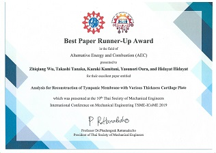
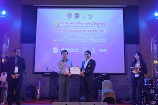
（写真はTSME-ICoME2019公式サイトより）
| TSME-ICOME 2019 Best Paper Runner-Up Award (DRC) |
(Evaluation of Failure Development Focusing on Frequency Modulation)
Journal of Physics : Conference Series Vol. 886, No. 012032, (2019)
Takashi Tanaka, Syuya Maeda, Yasunori Oura, Zhiqiang Wu
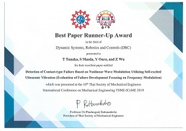
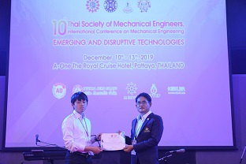
（写真はTSME-ICoME2019公式サイトより）
<日本機械学会関西支部表彰 研究賞>
2025年度 栗田 裕，大浦 靖典，田中 昂
業績：楕円振動を用いた微小部品の分別搬送
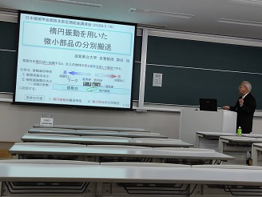
<日本機械学会 学会奨励賞（研究）>
2014年度 大浦 靖典
業績：ディスクブレーキの鳴きに及ぼすパッド剛性の影響の研究
2021年度 田中 昂
業績：非線形波動変調に基づく接触型損傷検出の研究
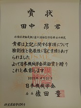
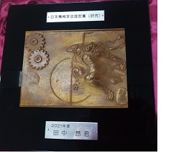
<日本機械学会関西支部表彰 奨励賞>
2020年度 田中 昂
業績：分散制御を用いた多点加振による音響空間の固有振動計測
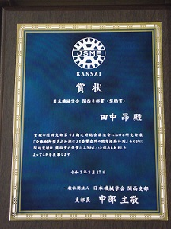
工作機械技術奨励賞
2016年度 受賞論文：薄肉円筒工作物に生じる工作物変形型びびり振動
日本機械学会関西学生発表会平成27年度学生員卒業発表講演会前刷集，No.16A15
川俣 遼悟（滋賀県大），栗田 裕，大浦 靖典，田中 昂，山本 脩平，川田 昌宏（カワタテック），松本 拓也
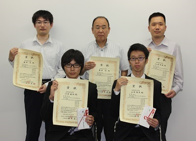
日本機械学会 若手優秀講演フェロー賞
2018年度 Dynamics & Design Conference 2018 中村 寛望
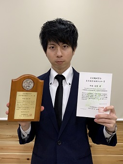
日本機械学会 関西支部定時総会講演会 ベストポスター賞
2016年度 川俣 遼悟 （写真一番左）
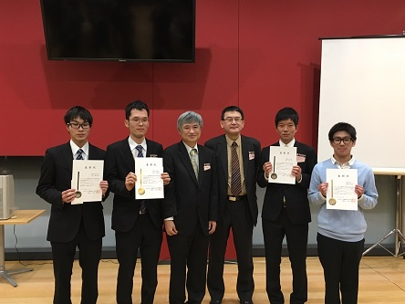
日本機械学会 関西学生会卒業研究発表講演会 優秀発表賞
2016年度 木澤 悠大，中村 寛望
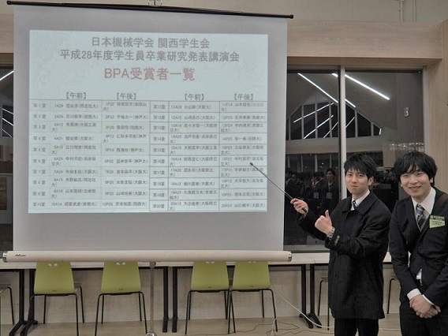
<学業関連の賞>
日本機械学会 三浦賞
2017年度 金本 将季
2015年度 上原 大貴
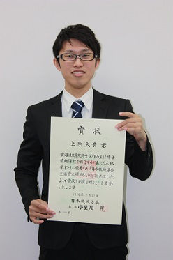
日本機械学会 畠山賞
2015年度 中西 恒貴
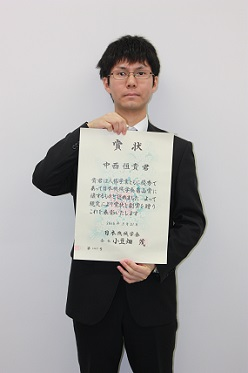
滋賀県立大学 学生表彰（学術研究）
2023年度 中尾 紘貴 new !